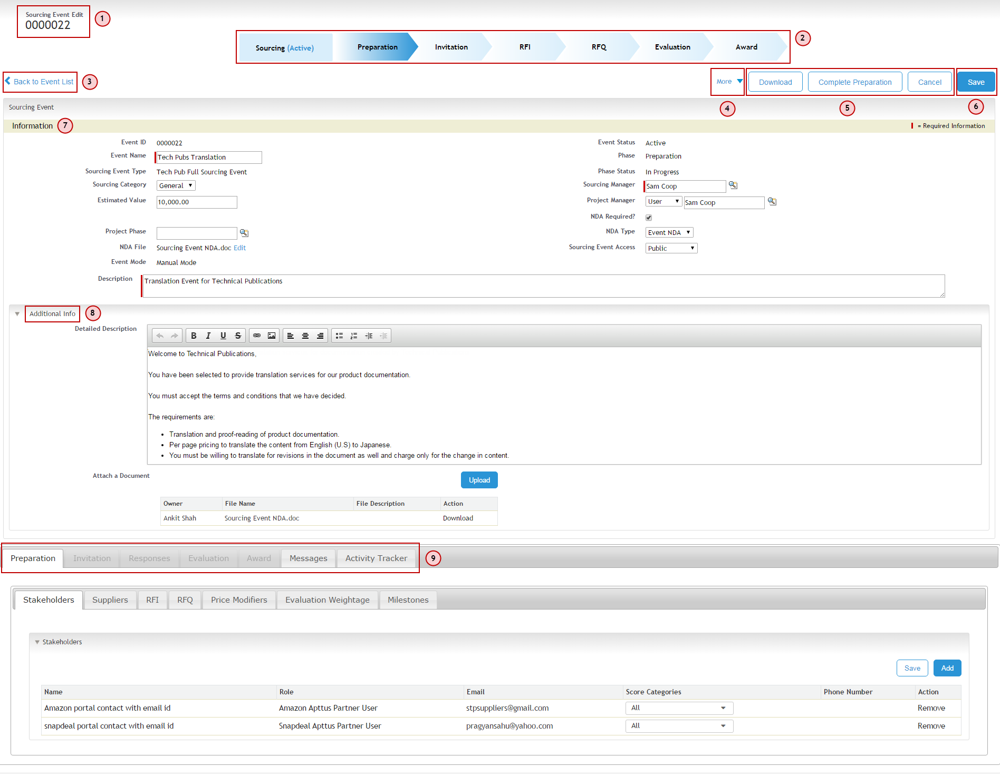

Sourcing Event
A Sourcing Event is created by the buyer to select the best supplier for required products or services. Buyers, Suppliers, and Stakeholders participate in the sourcing event. The buyer's job is to manage the entire sourcing event, suppliers respond to RFI and RFQ published by the buyer and stakeholders evaluate the scorecards. A System Administrator User will receive notifications for batch processing for each phase. A Sourcing Manager will not receive notifications for batch processing for each phase. However, if a Sourcing Manager is a System Administrator User in the org as well, he will receive notifications for batch processing for each phase.
Use Case
Technical Publications is a publishing company providing product documentation authoring services. Sam, the Sourcing Manager, is responsible for procuring translation services for their documentation. So, Sam creates a sourcing event for procuring Translation Services.
The following table represents the details of Translation Tech Pubs sourcing event.
|
Field Name |
Details |
|
Sourcing Event Name |
Tech Pubs Translation |
|
Sourcing Event Type |
Tech Pub Full Sourcing Event |
|
Sourcing Category |
General |
|
Sourcing Manager |
Sam Coop |
|
Project Manager |
Sam Coop |
|
Estimated Value |
$ 10,000 |
|
NDA Required |
Yes |
|
NDA Type |
Event NDA |
|
NDA File |
Sourcing Event NDA.doc |
|
Description |
Translation Event for Technical Publications |
|
Detailed Description |
Welcome to Technical Publications,You have been selected to provide translation services for our product documentation.You must accept the terms and conditions that we have decided. The requirements are:
|
The image shows the Sourcing Event Detail screen.

The table below describes the components of sourcing event screen and their functionalities in detail.
|
Number |
Name |
Functionality/Use |
|
1 |
Sourcing Event ID |
Displays the ID of a sourcing event. |
|
2 |
Chevrons |
Displays the current Sourcing Event Status, Phase and Phase status on top of the sourcing event screen. Note: Solid state of color depicts that the phase is complete; the gradient state of color depicts that the phase is currently under progress ; and the light state of color depicts that the phase hasn't started yet. |
|
3 |
Back to Event List link |
Back to Event List is a tertiary button and it takes you to the list of sourcing events. |
|
4 |
Tertiary buttons |
The buttons like Back to Preparation (In Progress), Set On-Hold, Cancel Event, and Clone Event are Tertiary buttons. Back to Preparation is phase-oriented button and the actions change on the basis of the current phase status; whereas the rest of buttons are visible through out the event after it has been activated. |
|
5 |
Secondary buttons |
The buttons like Cancel, Publish event, and Activate Event are Secondary buttons. These buttons are phase oriented. Depending on the phase status, actions will change accordingly. |
|
6 |
Primary buttons |
The Save button is a Primary button. It is active through-out the event, irrespective of the current phase. |
|
7 |
Information section |
Displays all the details of the sourcing event. |
|
8 |
Additional Info section |
Displays the detailed description and the attachment details. |
|
9 |
Event Phase Tabs |
Contains the tabs of all the phases of the Event. Note: The Event Phase tabs are displayed only after you activate the event. |